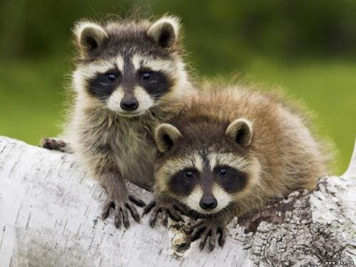
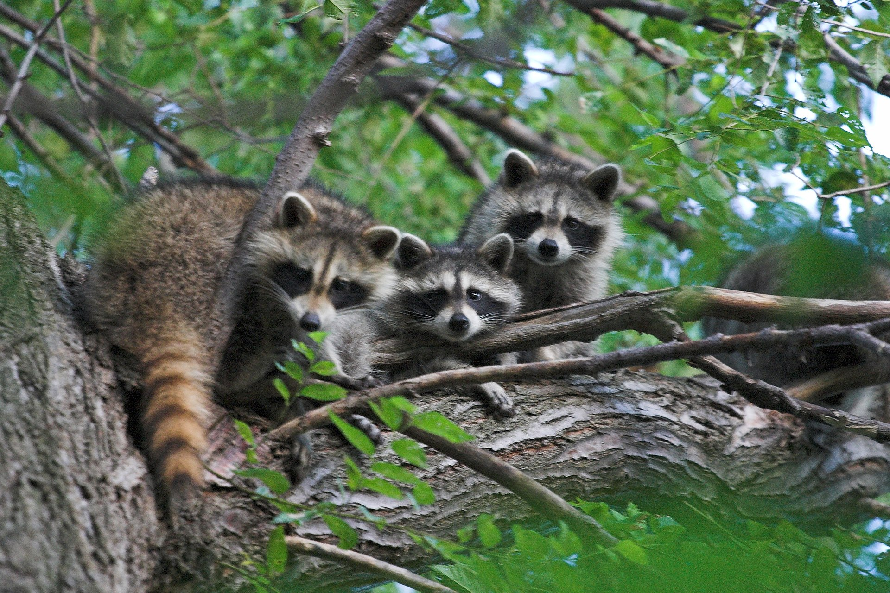
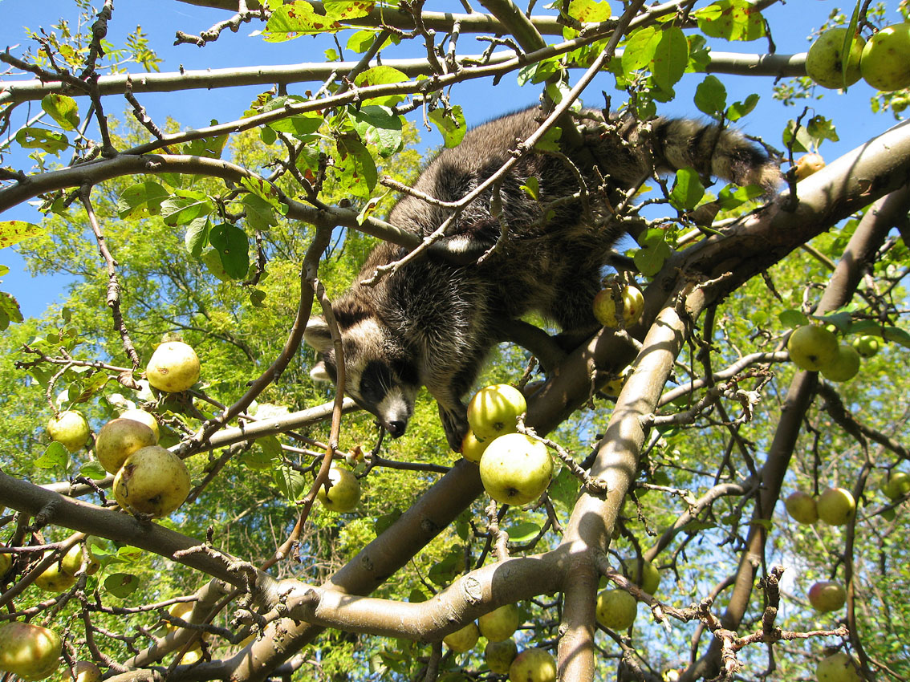
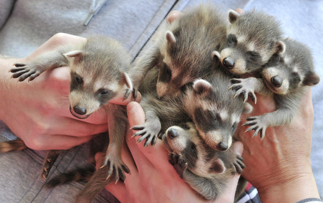
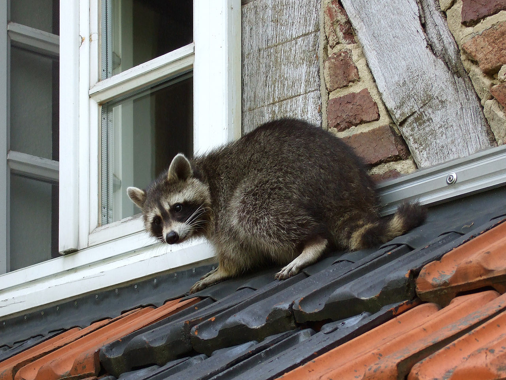

|
|
CaracterísticasO Guaxinim faz parte da ordem carnívora e pertence à família Procyonidae. Dentre a ordem dos carnívoros, esses animais são os menos carnívoros, em razão disso, em sua dentição faltam alguns dentes próprios para certas especializações, o que pode ser verificado em outras espécies que se alimentam mais de carne. Eles possuem 5 dedos nas mãos e nos pés e costumam subir em árvores com facilidade. Esses animais apresentam um porte médio, que varia de 01 a 08 kg, contando com pontudos focinhos e olhos voltados totalmente à frente, com pequenas cabeças e orelhas em formato arredondado. Eles possuem uma visão noturna boa e audição também, além de excelente olfato, utilizado na comunicação entre os indivíduos e na busca de alimentos. O guaxinim tem aproximadamente 54 cm de tamanho chegando até a um metro de comprimento, seu peso pode chegar até os 10 Kg. Sua cauda pode medir até 38 cm de comprimento. Normalmente os machos costumam ser maiores que as fêmeas. O habitat preferido do guaxinim são florestas próximas à água e pântanos. Durante o dia, ele dorme em árvores ocas, buracos em pedras ou no chão. É muito adaptável e, hoje, é encontrado também em áreas urbanas, sendo também encontrado como espécie invasora na Alemanha, áreas da antiga URSS e Japão. ComportamentoO guaxinim possui hábitos essencialmente terrestres, entretanto é bastante experiente para subir às árvores e muito bom nadador. Prefere viver em ambientes com grande humidade. Costuma descansar em buracos de árvores e sobre elas. Possui hábitos noturnos e pode viver tanto sozinho quanto em par. O guaxinim dorme o dia todo e sai à noite para procurar comida. Ele persegue sua presa em águas rasas ou no chão, arranhando, virando e examinando de perto assim que a vítima é capturada. No entanto, ele só a consome se o cheiro for aprovado por seu apurado faro. Em áreas frias, os mapaches passam o inverno em tocas e buracos nas árvores. Apesar de dormirem profundamente, eles não hibernam, saindo de seu esconderijo assim que o tempo fica mais ameno. AlimentaçãoCostuma se alimentar de moluscos, caranguejos, sapos, peixes, e ainda de outros vertebrados menores, frutas e insetos, tendo o cuidado de lavar bem os alimentos antes de ingeri-los. São capazes de buscar alimentos enterrados de até cinco centímetros. Guaxinins são criaturas muito adaptáveis mas possuem inimigos, Raposa-vermelha são uma concorrência com a qual os guaxinins tendem a se preocupar, mas ambas as espécies não se encontram com grande frequência mas normalmente a raposa tende a dominar o guaxinim agora já no caso de predadores temos um exemplo : Lobo-vermelho, um grande predador do guaxinim, o lobo-vermelho anda quase sempre em bandos e costumam ser o predador principal da espécie, Coiote é um grande predador do guaxinim mas costuma ser apenas um concorrente,o coiote não ataca guaxinins em duplas mas ataca quando se depara com um exemplar jovem ou ferido. ReproduçãoOs machos acasalam com muitas fêmeas, enquanto as fêmeas aceitam apenas um pretendente. Os machos, que, quase sempre, são pacíficos, costumam brigar entre si com muita ferocidade durante a época do acasalamento. Na primavera, a fêmea normalmente tem de três a cinco filhotes depois de nove semanas de gestação e cuida sozinha da ninhada. A família continua unida por um ano aproximadamente, quando os jovens guaxinins deixam, então, a companhia da mãe. ConservaçãoEsse animal está presente desde a Costa Rica até a Argentina, sendo bastante semelhante à espécie encontrada na América do Norte. Existem também na Europa Central, no Cáucaso e no Japão, onde se estabeleceram após fugas de indivíduos vindos de outras regiões. A pele do guaxinim é usada na fabricação de roupas e de outros produtos e, graças a isso, sua situação é preocupante, pois o animal é caçado em grande escala, especialmente no sul dos Estados Unidos. TaxonomiaA partir de 2005, são reconhecidas 22 subespécies de guaxinins, que estão distribuídas em toda América do Norte, Alemanha, França, Japão e antiga União Soviética. Das 22 subespécies, 2 já foram extintas.
|
Universidade do Minho
Ricardo André Araújo Neves A78764